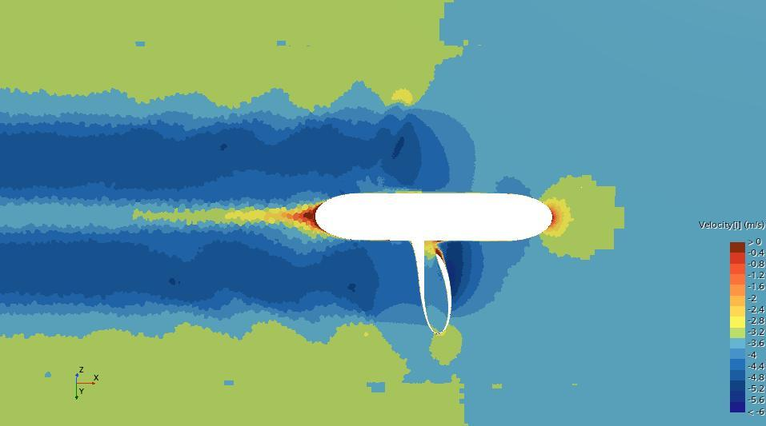

The challenge
Unconventional propeller geometry introduces a complex design space: changing blade and ring geometry affects hydrodynamic loading, manufacturability, and propulsion efficiency.
I developed software to generate and visualize toroidal propeller geometry, then studied how key parameters influence open-water hydrodynamic performance using Reynolds-averaged Navier–Stokes (RANS) simulation. The work resulted in a conference publication.
What I contributed
- Developed a PyQt5 + VTK parametric geometry tool for 3D toroidal propeller modeling and export.
- Set up and ran STAR-CCM+ CFD simulations to compare geometric configurations.
- Conducted mesh-independence checks and comparisons against a conventional propeller baseline.
- Analyzed the relationships among geometric design parameters and simulated hydrodynamic performance.
How the system works
Parameterize
Generate blade surfaces and ring geometry from editable geometric parameters.
Simulate
Evaluate open-water behavior in STAR-CCM+ with RANS and a moving reference frame.
Compare
Validate numerical settings and compare performance metrics with the baseline design.
Results & takeaways
The performance improvement refers to CFD results under the studied conditions—not a claimed measured sea-trial gain.

Read the linked repository for source code and original project material.